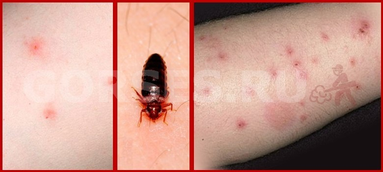
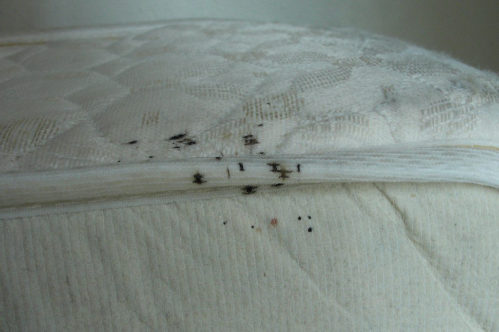
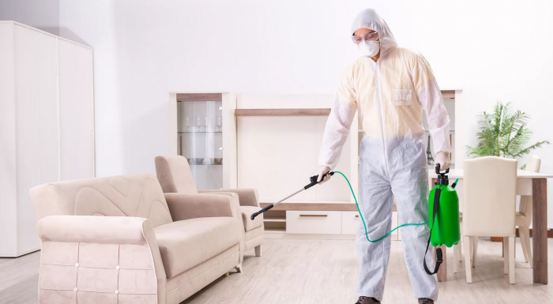

Как проверить наличие клопов? Обработка квартиры от клопов: подробная инструкция и советы СЭС

Постельные клопы — это не просто неприятность, это серьезная проблема, которая может нарушить ваш сон, вызвать аллергические реакции и быстро распространиться по всей квартире. Эти маленькие кровососущие насекомые ведут ночной образ жизни, и их присутствие часто обнаруживается, когда колония уже достаточно разрослась. Главное — не паниковать, а действовать по четкому плану. В этой статье мы подробно расскажем, как проверить наличие клопов в вашей квартире, и дадим исчерпывающую инструкцию по эффективной обработке квартиры от клопов с помощью профессиональных методов.
Часть 1: Как проверить наличие клопов (Пошаговая инструкция по обнаружению)
Чтобы успешно избавиться от вредителей, нужно сначала точно знать, как найти клопов и где они прячутся. Обнаружение клопов требует внимательности и знания их "слабых мест".
1.1. Визуальные признаки: Что искать
Клопы оставляют после себя несколько характерных следов, которые служат прямым доказательством их присутствия:
- Укусы клопов: Это самый частый признак. Укусы обычно располагаются "дорожкой" или цепочкой по 3-5 красных зудящих пятна. Это связано с тем, что клоп прерывает питание и делает несколько "проб" на одном участке кожи. Укусы могут сильно чесаться и напоминать аллергическую реакцию или укусы комаров. 
- Черные точки (Экскременты): Это переваренная кровь, которую клопы оставляют в местах своего скопления. Выглядят как маленькие черные точки, похожие на следы от фломастера. Если смочить их водой, они расплывутся, как кровь. Ищите их на швах матраса, под плинтусами, за отклеившимися обоями. 
- Пятна крови: Небольшие, ржавые пятна на постельном белье. Они появляются, когда человек во сне давит на сытого клопа.
- Хитиновые панцири (Линька): Клопы растут и сбрасывают свою внешнюю оболочку (хитиновый панцирь). Эти полупрозрачные, пустые "кожурки" часто можно найти рядом с их гнездами.
- Яйца и личинки: Яйца клопов очень маленькие (около 1 мм), белого или желтоватого цвета, похожи на рисовые зернышки. Личинки (нимфы) — это уменьшенные копии взрослых особей, светлые и полупрозрачные.
1.2. Места обитания: Где искать
Клопы предпочитают прятаться как можно ближе к источнику питания, то есть к вашему спальному месту. Проверку следует начинать именно с этой зоны.
| Место поиска | Что проверять |
|---|---|
| Спальное место | Швы, складки и пуговицы матраса, каркас кровати (особенно деревянный), изголовье, пространство под кроватью. |
| Мягкая мебель | Швы диванов и кресел, под подушками, внутри ящиков для белья. |
| Стены и пол | Плинтусы, щели в паркете или ламинате, места отхождения обоев от стены, розетки и выключатели. |
| За картинами, зеркалами, коврами, внутри книг, в одежде, которая долго лежит в шкафу. |
1.3. Ночная проверка
Поскольку клопы активны ночью, один из самых надежных способов проверить наличие клопов — это внезапно включить свет через 30-60 минут после того, как вы легли спать. Если заражение сильное, вы можете увидеть, как насекомые быстро разбегаются и прячутся.
Часть 2: Обработка квартиры от клопов (Эффективные методы)
Если вы обнаружили следы клопов, не тратьте время на малоэффективные народные средства. Единственный надежный способ — это профессиональная дезинсекция клопов СЭС. Однако, прежде чем вызвать специалистов, необходимо провести тщательную подготовку.
2.1. Подготовка к обработке (Ваш чек-лист)
Правильная подготовка к обработке от клопов — это 50% успеха. Чем лучше вы подготовите квартиру, тем выше шанс уничтожить всех вредителей с первого раза.
- Стирка и сушка: Все постельное белье, одежду, шторы и мягкие игрушки постирайте при максимально высокой температуре (не менее 60°C) и просушите в сушильной машине или на солнце.
- Уборка: Проведите влажную уборку и пропылесосьте все поверхности, включая матрасы и ковры. Мешок от пылесоса сразу же выбросьте, предварительно упаковав в плотный пакет.
- Мебель: Отодвиньте мебель от стен, чтобы обеспечить специалисту доступ ко всем углам и плинтусам.
- Безопасность: Уберите продукты питания, посуду, средства личной гигиены и детские игрушки в герметичные пакеты или вынесите из квартиры. Обязательно выведите из помещения домашних животных.
2.2. Профессиональная дезинсекция (Самый надежный способ)
Специалисты СЭС используют мощные инсектициды и профессиональное оборудование, которое позволяет препарату проникнуть в самые труднодоступные места. 
- Методы обработки:
- Холодный туман: Инсектицид распыляется в виде мелкодисперсной взвеси (тумана), которая оседает на всех поверхностях. Это эффективный и экономичный метод.
- Горячий туман: Препарат нагревается и распыляется в виде пара. Частицы тумана еще мельче, что позволяет им проникать даже в микротрещины и щели. Это самый эффективный метод для сильного заражения.
| Метод | Описание | Преимущества |
|---|---|---|
| Холодный туман | Распыление инсектицида при комнатной температуре. | Экономичность, высокая проникающая способность. |
| Горячий туман | Распыление нагретого инсектицида (пара). | Максимальная проникающая способность, уничтожение яиц, идеален для сильного заражения. |
Преимущества СЭС: Обращаясь к профессионалам, вы получаете гарантию на работу, использование сертифицированных и безопасных для человека препаратов, а также точное знание того, чем травить клопов для достижения 100% результата.
2.3. Самостоятельная обработка (Риски и ограничения)
Многие пытаются травить клопов самостоятельно, используя бытовые аэрозоли или народные средства (уксус, полынь). Однако эти методы редко дают долгосрочный результат. Клопы могут просто перебраться в менее обработанные участки квартиры, а их яйца останутся нетронутыми. В итоге вы только потратите время и деньги, а проблема вернется через несколько недель.
Заключение: Что делать после обработки
После того, как специалисты провели обработку квартиры от клопов, вам нужно выполнить несколько простых шагов:
- Проветривание: Вернувшись, откройте все окна и проветривайте помещение не менее 2-3 часов.
- Уборка: Влажную уборку можно проводить только через 3-5 дней после обработки, чтобы не смыть защитный барьер инсектицида. Протирайте только те поверхности, с которыми контактируете (столешницы, ручки дверей). Полы и плинтусы лучше не мыть как можно дольше.
- Профилактика: Чтобы избежать повторного заражения, будьте внимательны к вещам, которые приносите из поездок, и регулярно осматривайте спальное место.
Своевременное обнаружение и профессиональная обработка квартиры от клопов — это ключ к быстрому и полному избавлению от вредителей. Не откладывайте решение проблемы, чтобы не дать клопам шанса на размножение.